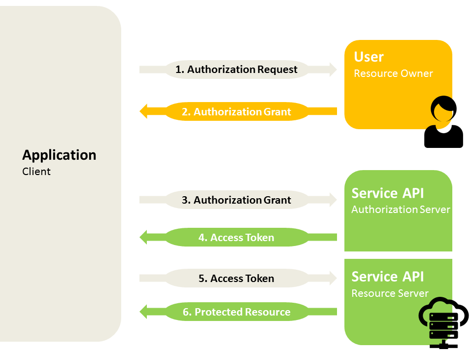

The OAuth microservice provides OAuth certification capabilities. You can use the OAuth microservice to get authorization for someone’s information, for purposes such as importing data.
OAuth is an open standard for access delegation. CWI uses it to give applications access to stored information without providing the passwords, which would provide too much access. Companies such as Google use OAuth to permit users to share information about their accounts with third party applications or websites. OAuth provides a way to authorize access without sharing credentials, and to revoke access if necessary.
You are using OAuth every time you click a button that says "Sign in with Google." The application that you are accessing requests your authorization from Google.
OAuth works with HTTP. The protocol lets an authorization server issue an access token if the resource owner allows. It allows for different access levels, such as read instead of read-write, or unidirectional instead of bidirectional. It allows the resource owner to set the granularity of access, and it allows the resource owner to revoke access, if necessary.
The OAuth Microservice from CWI currently supports only the OAuth 1.0a, but it is intended to support OAuth 2.0 as well.
Note that an application (client) that uses OAuth has to be registered with the provider first. That typically happens in the early stages of development, when you get the development information.
The general flow of requests and information goes like this:

The client is your application. The Service API is the OAuth Microservice.
As you use the OAuth SDK, remember that:
Implementations vary across providers.
We currently don't have any mechanism for refreshing access tokens if they expire.
When using Docker images, you need Docker itself, access to a repository where Docker images are stored, a registry of the available images, and an HTTP client.
To use the OAuth SDK, you must prepare or install the following programs:
Docker; if you want a UI to make using docker easier, we recommend Kitematic.
AWS Client for connecting to the EC2 Container Registry.
An HTTP client, such as Postman.
To use the system, you must install Docker. To store, manage and run Docker container images, we use the Amazon EC2 Container Registry (ECR).
To install Docker, go to https://docs.docker.com/engine/installation/
Install the latest stable release for your platform.
Most of the controls are done through the Docker command line interface, but accessed through the AWS CLI.
To install the AWS CLI go to http://docs.aws.amazon.com/cli/latest/userguide/installing.html and follow the instructions there.
To work with the OAuth implementation, you need a client that deals with the https messages. We recommend the native Postman client. (Note that the Postman Chrome app is deprecated.)
To install the Postman client, go to https://www.getpostman.com/ and follow the instructions there.
To work with the Amazon system, you need a profile. This only needs to be done once.
Get your AWS Key ID and Secret Access Key from Solutions.
If there is no AWS CLI profile for ECR, create one:
The region must be
You can define any default output format but these examples use json.
To set up a connection to the OAuth Microservice, you need to:
Pull the image from the CaseWare Docker Registry.
Prepare the local folder that will hold the configuration file.
Set the
Configure each new provider. Existing providers are preconfigured.
You can set or override existing environment variables for a docker image in one of three ways. These methods apply to simple (non-array) environment variables. (The other arguments to docker run have been left off for clarity.)
You can specify the environment variable with the
$ docker run -e SPRING.PROFILES.ACTIVE=dev
You can list the environment variables in a file and include the file name with the
$ docker run --env-file xero-dev-env
You can use any of these.
Each microservice has its own repository, Different versions of the same microservice use a single repository.
Login to your AWS profile on ECR.
On Windows:
Invoke-Expression -Command (aws ecr get-login --profile your-profile --region us-east-2)
On Unix variants, Linux, or MacOS:
$ $(aws ecr get-login --profile your-profile --region us-east-2)
Pull the image from CaseWare Docker Registry.
$ docker pull cw-registry:9000/dev/cw-oauth
Verify that the OAuth Service image was pulled from CaseWare Docker Registry.
$ docker imagesREPOSITORY TAG IMAGE ID CREATED SIZEcw-registry/cw-oauth latest ce717fdb2222 6 seconds ago 336.4 MB
Prepare a local folder to contain the config files shared with docker container. In this example from a Linux system, the folder has already been created and contains config files for Quickbooks and for Xero.
$ pwd && ls/home/user/oauth-configsquickbooks.json xero.json
Set the
SPRING.PROFILES.ACTIVE=dev
For each provider, you need:
A configuration file, named for the provider.
Two environment variables set, named
The information for the configuration files and the environment variables comes from the provider.
The OAuth configuration files go in the folder you created. The configuration files are JSON files, named for the provider, and contain an object with these four properties. The values come from the provider.
| Property | Value |
| requestTokenURL | URL specified by provider to acquire a request token. |
| authorizationURL | URL specified by provider to direct a resource owner (i.e. user) for login. |
| accessTokenURL | URL specified by provider to acquire an access token after receiving a grant from a resource owner. |
| scopeKeyword | Provider-specific parameter used to identify the resource. In the example, realmId refers to a Quickbooks Company ID. |
For example:
{
"requestTokenURL": "https://oauth.intuit.com/oauth/v1/get_request_token",
"authorizationURL": "https://appcenter.intuit.com/Connect/Begin",
"accessTokenURL": "https://oauth.intuit.com/oauth/v1/get_access_token",
"scopeKeyword": "realmId"
}
The keys for a provider come from the provider. Typically they are available as part of the development package.
For each provider, set two environment variables. The environment variable names are of the form
QUICKBOOKS_CONSUMER_KEY=xxxxxxxxxxxxxxxxxxxxxQUICKBOOKS_CONSUMER_SECRET=xxxxxxxxxxxxxxxxxxTo connect to the OAuth Microservice, you require:
Docker
An HTTP client such as Postman or cURL
A text editor
To connect, you need to:
Start the OAuth Microservice
Start the OAuth flow
Get the information to create an OAuth1 authorization header
Start the OAuth Service with
$ docker run -p 8000:8000 --env-file your-env-file -v
/home/user/oauth-configs:/etc/oauth cw-registry/cw-oauth
[2017-08-09 15:12:54.932] INFO [main] c.c.o.m.OAuthApplication - - Starting OAuthApplication on localhost with PID 1 (/opt/oauth/oauth.microservice-1.0-SNAPSHOT.jar started by root in /)
To start the OAuth flow, send a
{
"baseParams":{
"provider": "nameOfProvider",
"firmName": "nameOfYourFirm",
"sessionId": "yourSessionId"
},
"callbackUrl": "http://localhost:8000/debugPrintCallback"
}
After the resource owner authenticates, the provider sends a request to the callback URL. The provider's request contains the resulting OAuth token and other parameters related to the resource. In this example, we use the
The body of the request contains a plaintext URL to redirect a client to log in and grant authentication:
https://appcenter.intuit.com/Connect/Begin?oauth_token=qyprdFnE2EH741CXUAXScJfgtwOWEcKlrykA6UEjVAVGXCb7&oauth_callback=http%3A%2F%2Flocalhost:8000%2FdebugPrintCallbackLogin to the URL in the previous response and authenticate.
After a successful authentication, the OAuth provider redirects to a page containing a bare callback string. For example:
oauth_token=qyprdFnE2EH741CXUAXScJfgtwOWEcKlrykA6UEjVAVGXCb7&oauth_verifier=k1tzqb5&realmId=193514496812594&dataSource=QBOTo complete the OAuth flow, send a
{
"baseParams":{
"provider": "nameOfProvider",
"firmName": "nameOfYourFirm",
"sessionId": "yourSessionId"
},
"callbackString": "oauth_token=qyprdDy1MhEGj4IAV9XTgM4xBnVti2uSivvsF0xKrkPsT1iq&oauth_verifier=d5ahpwg&realmId=123145849620082&dataSource=QBO"
}
Get a list of authorized resources by sending a
{
"provider": "nameOfProvider",
"sessionId": "yourSessionID",
"firmName": "nameOfYourFirm"
}
The JSON returned contains a list of resources identified as
[
{
"scope": "193514496812594",
"oAuthServiceId": "829jgp09825rg254r0t2g4"
},
{
"scope": "164512345412232",
"oAuthServiceId": "092w42s8d7g0vs98fs"
}
]
Every outbound request to an OAuth1 provider requires a signature, generated from a combination of:
Request URL with parameters
HTTP Verb
Request Params
Provider-issued Consumer Key and Consumer Secret
To generate an OAuth1 authorization header:
Send a
{
"baseParams": {
"provider": "nameOfProvider",
"sessionId": "yourSessionID",
"firmName": "nameOfYourFirm"
},
"oAuthServiceId": "829jgp09825rg254r0t2g4",
"url": "https://sandbox-quickbooks.api.intuit.com/v3/company/193514496812594/account/90?minorversion=4"
}
The returned JSON contains a double-quote-escaped string for the Authorization header in the outbound request.
{
"headerName": "Authorization",
"headerValue": "OAuth oauth_nonce=\"989043552\", oauth_signature=\"uRttVCxc%2BbUQtO8ZZ7AvPQnSkgM%3D\", oauth_token=\"qyprd9su2vdsQCGS37RmXZ74WowKG1dxH9j1HrM12R7Echi2\", oauth_consumer_key=\"UUKVDZHWBYTxLniTfHBjJJDLLLKBUR\", oauth_timestamp=\"1502288322\", oauth_signature_method=\"HMAC-SHA1\", oauth_version=\"1.0\""
}
Construct the OAuth1 Authorization Header to make a successful request. Remember to remove the escape backslash characters.
Place the header in your outbound request to the API URI.
For information on modifying your setup to handle specific types of imports, refer to the Import and Automap tutorial in the SE API Reference.